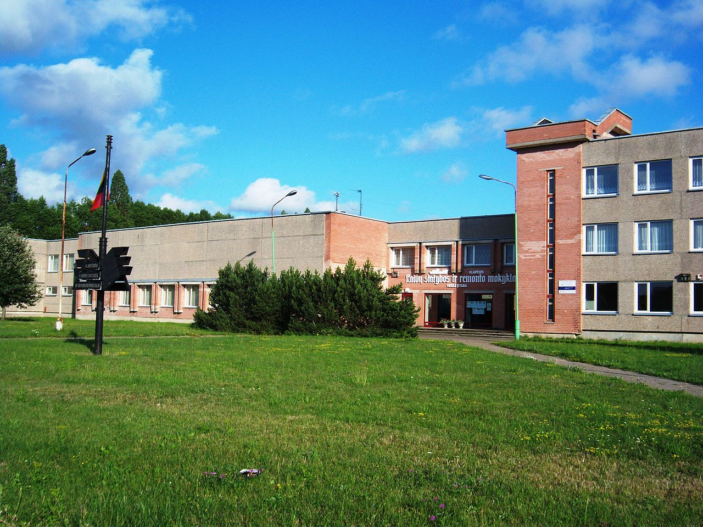
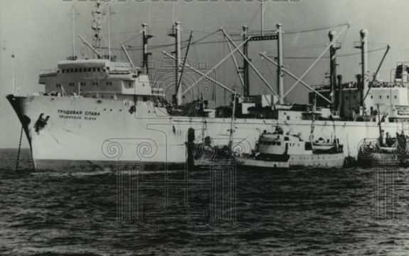
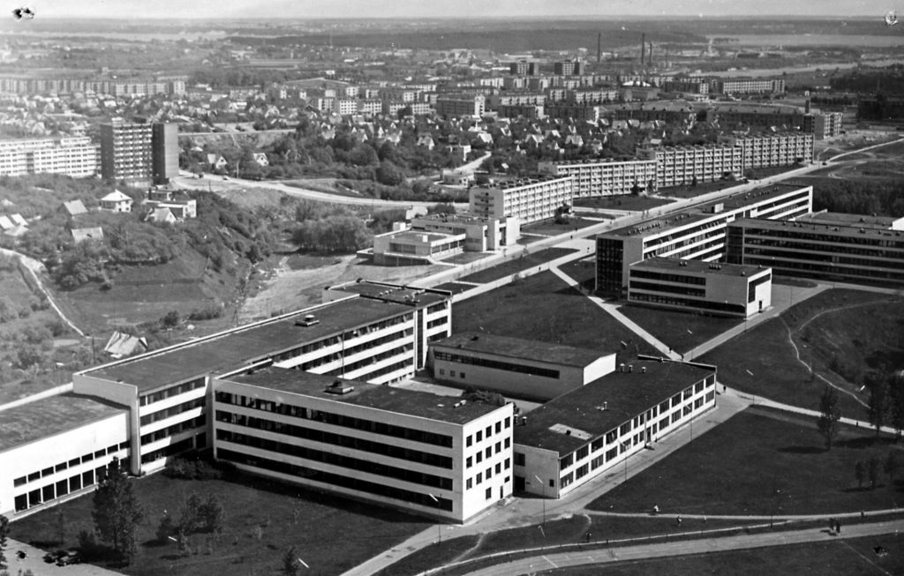
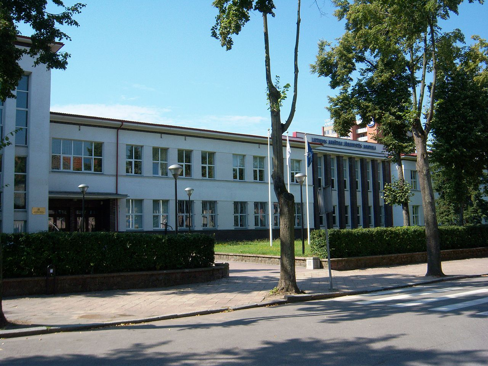

Pasivaikščiojimas po Kražių miestelį
Vytautas Šustauskas gimė 1945 m. kovo 19 d. Kražiuose, Raseinių apskrityje.

1964 m. baigė Klaipėdos laivų statybos technikumą, įgijo techniko-technologo specialybę. Tarnavo sovietų armijoje.

1967 m. plaukiojo žvejybos traleriais Atlanto vandenyne, Lietuvos
okeaninio laivyno bazės jūreivis.


1968–1969 m. studijavo Kauno Politechnikos instituto (KPI)
Klaipėdos fakultete, 1970–1971 m. mokėsi Klaipėdos jūreivystės
mokykloje.
1964 m. baigė Klaipėdos laivų statybos technikumą, įgijo techniko-technologo specialybę. Tarnavo sovietų armijoje.
1968–1972 m. Klaipėdos gamyklos „Progresas“ mechanikas. 1972-1973 m. persikėlė gyventi į Kauną, 1972–1989 m. Kauno radijo matavimų technikos mokslinio tyrimų instituto inžinierius, inžinierius technologas, Kauno metalo dirbinių gamyklos cecho viršininkas, Kauno radijo gamyklos Radijo eksperimentinio konstravimo biuro inžinierius technologas.
Dalyvavo atkuriant Lietuvos nepriklausomybę, per 1991 m. sausio įvykius saugojo parlamentą. Nuo 1991 m. kovojo už socialiai remtinų, neįgaliųjų, daugiavaikių šeimų teises. Protesto akcijų, žygių ir mitingų organizatorius.[11] 1997 m. rugsėjo 7–10 d. organizavo „Ubagų žygį“.[12][13]
1995–1997 m., 1997–2000 m., 2000–2003 m. Kauno miesto savivaldybės tarybos narys. 2000 m. balandžio 13 d. – 2000 m. spalio 30 d. Kauno miesto savivaldybės meras.[14] 2000-2004 m. Seimo narys. 2002 m. išrinktas Kauno miesto savivaldybės tarybos nariu, mandato atsisakė.
1989–1992 m. Lietuvos laisvės lygos Kauno skyriaus vadovas. 1992 m. įkūrė visuomeninį politinį judėjimą Lietuvos laisvės sąjungą, 1994 m. tapusį politine organizacija, jos pirmininkas.
2008 m. nesėkmingai dalyvavo Seimo rinkimuose.[15]
2023 m. balandžio mėnesį V. Šustauskas pateko į ligoninę, gegužę jis perkeltas į reabilitacijos skyrių. 2023 m. birželio 21 d. eidamas 79-metus V.Šustauskas mirė savo namuose.[16]